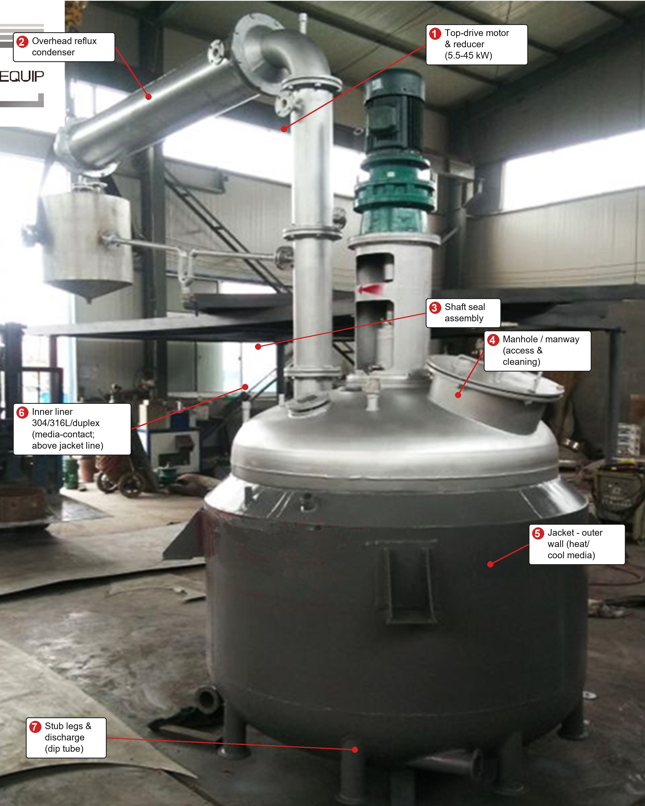
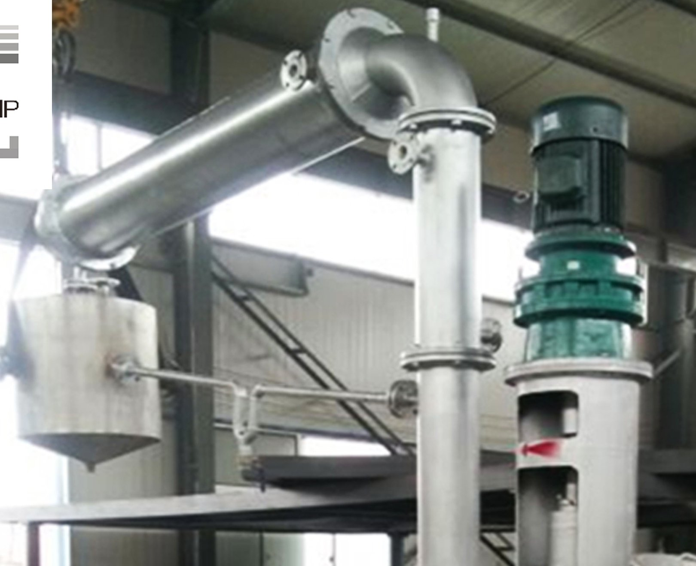
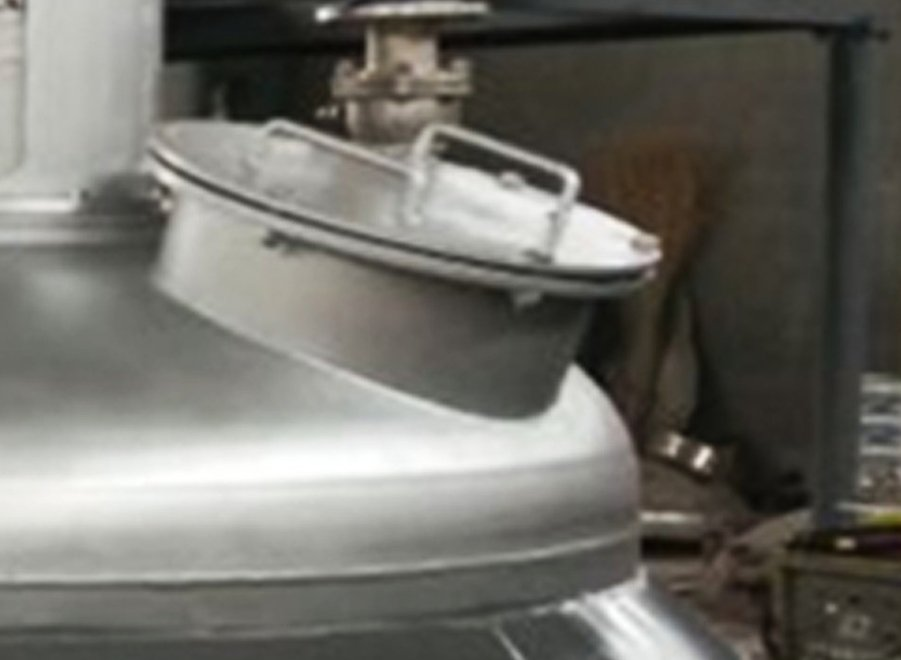
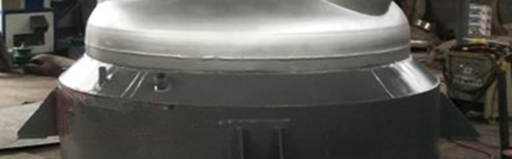
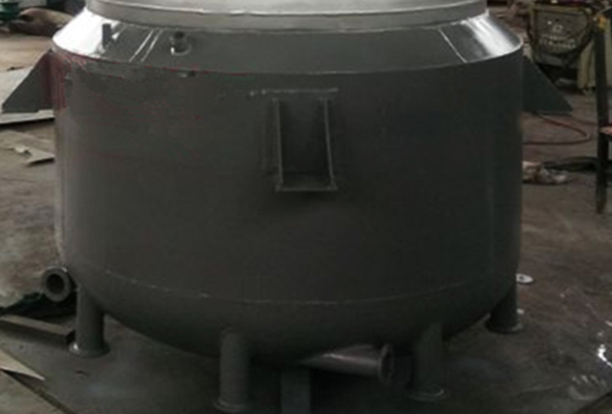
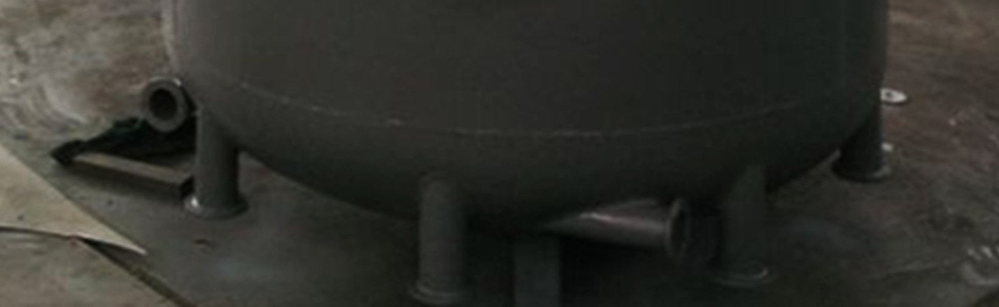
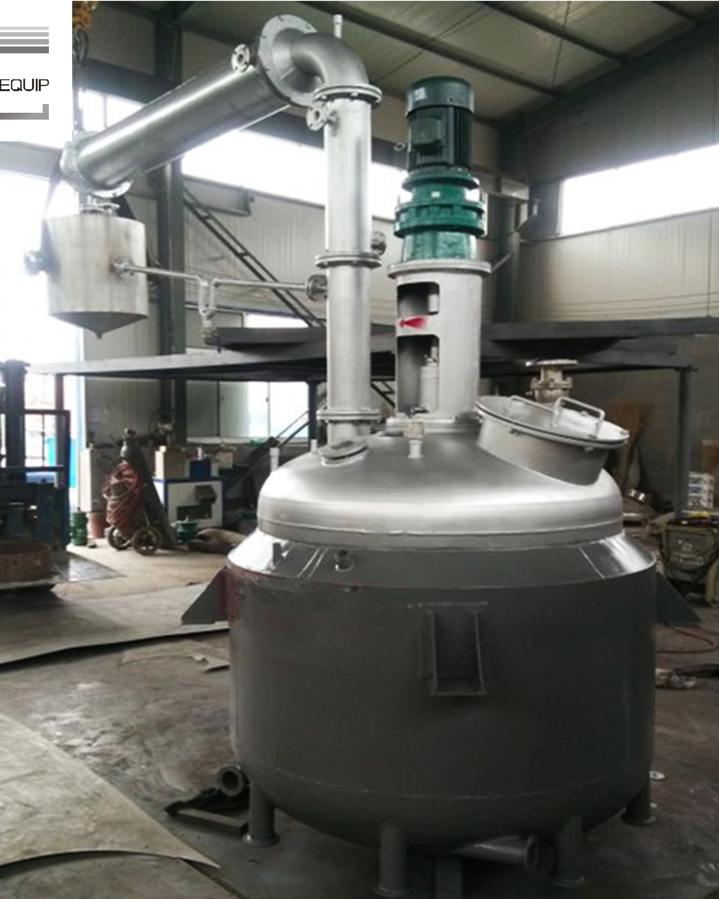

Jacketed, top-agitated pressure vessel with overhead reflux condenser, engineered for resin synthesis. 500L – 20,000L, media-contact liner in 304 / 316L / duplex.

Nylon 66 and copal resin processes are hard on equipment: sustained temperature cycling, volatile monomer handling, exothermic steps and long hold times. This reactor is built for that duty — double-wall jacket for controlled heating and cooling, overhead reflux condenser that returns unreacted monomer instead of losing it, and a top-driven agitator sized for your resin viscosity.
Two things decide whether this unit pays for itself on your line: your design pressure (confirm maximum operating pressure including relief-valve lift — not just normal operating) and your media spec (chloride content and temperature range). Send both with your inquiry and we confirm liner material, jacket duty and seal type in the first reply — so the unit that arrives is the one your process actually needs.
What You Are Looking At
Numbered as in the photo. Each zone is engineered for resin-autoclave duty — sustained temperature cycling, monomer handling and reflux condensation.
5.5 – 45 kW top-mounted drive. Speed matched to impeller type and resin viscosity; self-lubricating, wear-resistant shaft.
Integrated vertical condenser returns volatile monomer and solvent to the vessel during heating — controls material loss and vapor carry-over.
Mechanical seal standard; packing available. Double mechanical seal with barrier fluid where the monomer is toxic or highly volatile.
Top manway with clamped or bolted closure — cleaning, catalyst charging, impeller maintenance without draining the support legs.
The outer shell carries the heating/cooling medium (steam, hot water, thermal oil, cooling water) over the inner liner, over the full heated height.
The wall your resin actually touches — 304, 316L or duplex per your media. Chose chloride service? We talk it through up front: stress-corrosion cracking of 304 in chlorides is the classic resin-line failure.
Leg-supported base keeps the discharge valve clear for full drainage. Bottom dip tube with ball/butterfly valve; outlet matched to your line.
Close-Ups

Drive & condenser — motor–reducer stack with overhead reflux line. Reducer ratio and seal confirmed against your process temperature and media.

Top manway — sized for impeller removal and internal works, gasket joint rated to design pressure.

Jacket construction — continuous jacket seam; inlet/outlet positioned for even film flow, no local hot spots.

Outer jacket shell & liner — painted outer jacket over the stainless media-contact liner. Finish matched to your actual cleaning needs, not blanket mirror.

Support & discharge — leg support with bottom dip-tube discharge; valve type selected with you for resin viscosity and full drainage.

Unit as built — final assembly stage. Before dispatch: hydrostatic test, air tightness, full document pack.
Specifications
Everything below can be engineered to your process — final drawings issued for your approval before cutting starts.
| Parameter | Standard | Custom Options |
|---|---|---|
| Capacity | 500 – 20,000 L (shown 1,000 L) | Dimension per order |
| Working / design pressure | Set to your process with margin for mis-operation & relief lift | Confirm max operating pressure, not just normal |
| Inner liner | 304 / 316L / 2205 duplex / CS+SS composite | Selected against your media — confirm chloride content & temperature range |
| Outer jacket shell | Carbon steel, painted | Specified separately from the liner |
| Heating / cooling | Double-wall jacket: steam, hot water, thermal oil, cooling water | Internal coil for higher duty |
| Agitation | Top drive; impeller, paddle, anchor, self-suction, belt, screw | Matched to mass-transfer & viscosity; baffles & liquid level checked together |
| Drive power | 5.5 – 45 kW | Variable-frequency drive available |
| Shaft seal | Mechanical seal | Packing, or double mechanical seal with barrier fluid |
| Voltage | 380 V, 3-phase | Adapted to your site |
| Control | PLC, semi-automatic | Fully automatic on request — no PLC pushed if you don't need it |
| Safety & instruments | Pressure gauge, safety valve / rupture disc, temperature & level | Standard in every configuration — these never come off |
| Documentation | MTR (1.2343), NDT, hydrotest & air-tightness, certificate of conformity, packing list | Witnessing on request |
| Warranty | 1.5 years from dispatch | Extended on request |
Applications
Monomer polymerization and melt-phase processing under controlled temperature and reflux.
Resin synthesis and curing with sustained heating cycles and solvent handling.
Batch polymerization with jacket temperature control and overhead condensation.
General autoclave duty: exothermic steps, gas–liquid and liquid–liquid reaction under pressure.
SS-lined, polished-interior configuration with CIP-friendly nozzles on request.
Sanitary interior finish, steam-jacketed variants for batch cooking and holding.
Order Process
A reactor is not a catalog part. Here is how we run the order so nothing comes back to bite you at the production line.
You send media, operating T/P, batch cycle and duty. We check material, agitation, heat transfer and seal choice before quoting — flaws caught here cost hours, not rework.
Spec, drawings and commercial terms. We mark where cost can move and where it should not — safety valves, relief, gauges stay standard.
Inspected steel, qualified weld procedure and certified welders. Cutting, rolling, welding to code.
RT/UT/PT on joints per code, then hydrostatic and air tightness — witnessed if you want.
Full certificate pack checked line by line; export packing with lashing points verified for sea freight.
Startup guidance on nozzle orientation, control setup and first-batch checks — the spark is killed at the drawing stage, not at your site.
Send your process conditions — media, chloride content, max operating pressure, batch size, cycle time — and we come back with a specification-checked quotation, including where cost can be saved safely and where it should not be.